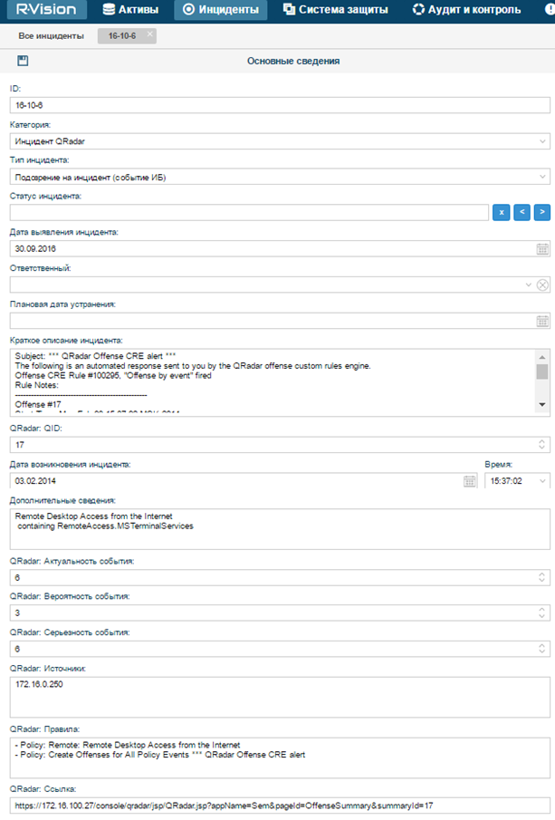

Инструкция по использованию регулярных выражений
Регулярные выражения (англ. regular expressions) — формальный язык поиска и осуществления манипуляций с подстроками в тексте, основанный на использовании метасимволов (символов-джокеров, англ. wildcard characters). По сути это строка-образец (англ. pattern, по-русски её часто называют «шаблоном», «маской»), состоящая из символов и метасимволов и задающая правило поиска.
(источник http://ru.wikipedia.org)
В R-Vision используются стандартные регулярные выражения javascript. Для написания рекомендуется использовать онлайн ресурсы типа https://regex101.com/#javascript
Элементы регулярных выражений
Метасимволы
Примеры основных метасимволов:
^ - (крышка, цирркумфлекс) начало проверяемой строки
$ - (доллар) конец проверяемой строки
. - (точка) представляет собой сокращенную форму записи для символьного класса, совпадающего с любым символом
| - означает «или». Подвыражения, объединенные этим способом, называются альтернативами (alternatives)
? - (знак вопроса) означает, что предшествующий ему символ является необязательным
+ - обозначает «один или несколько экземпляров непосредственно предшествующего элемента
* – любое количество экземпляров элемента (в том числе и нулевое)
\d – цифровой символ
\D – не цифровой символ
\s – пробельный символ
\S – не пробельный символ
\w – буквенный или цифровой символ или знак подчёркивания
\W – любой символ, кроме буквенного или цифрового символа или знака подчеркивания
Символьный класс
Иногда возникает необходимость описать несколько вариантов одного символа. Например, необходимо найти в тексте слово "Таиланд". Проблема в том, что некоторые люди пишут слово через й - "Тайланд". Кроме того, слово могут написать с маленькой буквы: "таиланд"?
Символьный класс определяет перечень символов, которые могут (или НЕ могут) быть на месте данного символа.
Символьный класс соответствует одиночному символу обрабатываемой строки, при этом сам символ должен содержаться в наборе, определяемым классом.
Например, символьный класс [aeiou] соответствует любой гласной букве в нижнем регистре (это будет только одна буква из перечня). Для слова Тайланд из примера регулярное выражение будет выглядеть следующим образом: [Тт]а[ий]ланд .
Внутри символьных классов есть свои собственные метасимволы:
^ - логическое НЕ. Например, [^ABC] - не A или B или C, но все остальные символы подходят.
- - (дефис) интервал символов. Так, выражение <H[1-6]> эквивалентно <H[123456]>
Захватывающие скобки и обратные ссылки
(выражение) - сопоставляется с «выражение» и запоминает сопоставление. Называется «захватывающие скобки».
Например, шаблон /(foo)/ сопоставляется с подстрокой «foo» и запоминает её в строке «foo bar».
Другими словами, результатом работы регулярного выражения будет сопоставленное содержимое из скобок.
Важная особенность данной конструкции заключается в том, что если захватывающих скобок в рамках одного выражения много, или есть вложенности, то результатом работы регулярного выражения будет «захваченный» текст из каждых скобок.
Пример: foo\s((.+\s)+) для выражения «foo strong code» выдаст результат:
|
Match 1 |
||
|
Full match |
0-16 |
`foo strong code ` |
|
Group 1. |
4-16 |
`strong code ` |
|
Group 2. |
4-16 |
`strong code |
Однако в R-Vision результат объединяется через пробел, поэтому в поле запишется: foo strong code strong code
Чтобы избежать данной ситуации, внутри захватывающих скобок следует использовать запись (?:выражение) и тем самым исключить дублирование части результата (см. пример ниже).
Помимо логического отделения выражений и захватывающих скобок круглые скобки выполняют функцию создания группы. Они полезны, когда регулярное выражение состоит из нескольких одинаковых частей. В этом случае достаточно один раз описать однотипную часть шаблона, а потом ссылаться на нее.
Пример: (выражение).+(\1)
Подобная запись означает: выбрать из текста любые символы между словами «выражение». Ссылка \1 указывает на выражение из первых скобок.
Группы нумеруются слева направо, начиная с 1. Каждая открывающая скобка увеличивает номер группы:
( ( ) )( ( ) )
^ ^ ^ ^
1 2 3 4
Нулевая группа совпадает со всей найденной подпоследовательностью.
Квантификаторы
Регулярные выражения предоставляют инструменты, позволяющие указать, сколько раз может повторятся один или несколько символов. Примерами являются:
+ - одно или более
* - ноль или более
? - ноль или одно
{n} - ровно n раз
{m,n} - от m до n включительно
{m,} - не менее m
{,n} - не более n
Теперь можно полностью понять регулярное выражение: "^[a-z0-9_-]{3,15}$" .
Разбор по частям:
^ - начало строки
[a-z0-9_-] – символ, который может быть маленькой латинской буквой, цифрой или символом подчеркивания.
{3,15} - предыдущий объект (см. выше) может повторяться от трех до пятнадцати раз.
Использование регулярных выражений на примере уведомления IBM QRadar
Тело письма уведомления об обнаружении нарушения IBM QRadar:
The following is an automated response sent to you by the QRadar offense custom rules engine.Offense CRE Rule #100295, "Offense by event" firedRule Notes:--------------------------------------------------Offense #17Start Time: Mon Feb 03 15:37:02 MSK 2014https://172.16.100.27/console/qradar/jsp/QRadar.jsp?appName=Sem&pageId=OffenseSummary&summaryId=17Magnitude: 5, Relevance 6, Severity: 6, Credibility 3 Description: Remote Desktop Access from the Internetcontaining RemoteAccess.MSTerminalServicesсontaining RemoteAccess.MSTerminalServices Event count for this offense: 598Flow count for this offense: 598 in 2 categoriesOffense Source Summary:Source: 172.16.0.250Location: OtherUser: N/AMac: N/AHost: N/AAsset Name: N/AOffenses: 1Events/Flows: 1196Top 5 Source IPs:(Description, Magnitude, Location, User)- 172.16.0.250, 0, Other, Unknown Top 5 Destination IPs:(Description, Magnitude, Location, User)- 172.16.100.2, 0, Other, Unknown- 172.16.100.254, 0, Other, Unknown- 172.16.100.5, 0, Other, Unknown- 172.16.100.3, 0, Other, Unknown Top 5 Log Sources:- Custom Rule Engine-8 :: QRADAR Top 5 Users:Top 5 Categories:(Name, Magnitude, Local Destination Count, Event/Flow Count)- Remote Access Policy Violation, 8, 4, 598- Remote Access, 0, 4, 598Top 5 Annotations:- 332: "CRE Event". CRE Rule description: [Remote Desktop Access from the Internet] Detects the Microsoft Remote Desktop Protocol from the Internet to a local host. Most companies consider this a violation of corporate policy. If this is normal activity on your network, you should disable this rule.- 337: "CRE Event". CRE Rule description: [Remote Desktop Access from the Internet] Detects the Microsoft Remote Desktop Protocol from the Internet to a local host. Most companies consider this a violation of corporate policy. If this is normal activity on your network, you should disable this rule.- 341: "CRE Event". CRE Rule description: [Remote Desktop Access from the Internet] Detects the Microsoft Remote Desktop Protocol from the Internet to a local host. Most companies consider this a violation of corporate policy. If this is normal activity on your network, you should disable this rule.- 336: "CRE Event". CRE Rule description: [Remote Desktop Access from the Internet] Detects the Microsoft Remote Desktop Protocol from the Internet to a local host. Most companies consider this a violation of corporate policy. If this is normal activity on your network, you should disable this rule.- 340: "CRE Event". CRE Rule description: [Remote Desktop Access from the Internet] Detects the Microsoft Remote Desktop Protocol from the Internet to a local host. Most companies consider this a violation of corporate policy. If this is normal activity on your network, you should disable this rule.Contributing CRE Rules:- Policy: Remote: Remote Desktop Access from the Internet- Policy: Create Offenses for All Policy EventsОпределение нужной информации:
Сначала необходимо определить набор информации, которую мы бы хотели увидеть в системе из этого уведомления.
Прежде всего рекомендуется взять идентификатор события, в данном случае - «Offense #17», а также дату появления события (она может отличаться от времени парсинга сообщения системой R-Vision) – «Start Time: Mon Feb 03 15:37:02 MSK 2014».
Далее следует взять описание события: «Description: Remote Desktop Access from the Internet
containing RemoteAccess.MSTerminalServices».
Если есть возможность, поищите в тексте письма источники инцидента.
Пример: возьмем параметры события «Magnitude: 5, Relevance 6, Severity: 6, Credibility 3»
Теперь необходимо понять, какие поля уже есть в системе, а какие потребуется добавить. Перечень полей инцидентов можно настроить в меню Настройки → Управление инцидентами → Поля инцидентов.
В нашем случае:
|
Наименование |
Тип |
Описание |
|
QRadar: QID |
Числовое поле |
Идентификатор |
|
Дополнительные сведения |
Несколько текстовых строк |
Это поле уже существует, в него мы запишем описание инцидента |
|
Дата возникновения инцидента |
Дата |
Это поле уже существует |
|
Время возникновения инцидента |
Время |
Это поле уже существует |
|
QRadar: Актуальность события |
Числовое поле |
|
|
QRadar: Серьезность события |
Числовое поле |
|
|
QRadar: Вероятность события |
Числовое поле |
|
|
QRadar: Имя правила |
Текстовое поле |
|
|
QRadar: Описание правила |
Несколько текстовых строк |
|
|
QRadar: Имя события |
Текстовое поле |
|
|
QRadar: Категория события |
Текстовое поле |
|
|
QRadar: Описание события |
Несколько текстовых строк |
|
Далее все используемые поля следует добавить в категорию инцидентов Событие безопасности, т.к. по умолчанию все письма из почтового ящика R-Vision импортируются именно с этой категорией.
Написание регулярных выражений
Теперь для созданных полей необходимо написать регулярные выражения. Нужно взять текст письма и вставить в редактор регулярных выражений (например https://regex101.com/#javascript). Он позволит увидеть, на какую часть текста сработает созданное регулярное выражения, тем самым исключая ошибки в их написании.
|
Наименование |
Тип |
Regexp |
|
QRadar: QID |
Числовое поле |
Offense\s\#([0-9]+) |
|
Дополнительные сведения |
Несколько текстовых строк |
Description:\s((?:.+\s)+) |
|
Дата возникновения инцидента |
Дата |
Start\sTime:\s(\w{3}\s\w{3}\s\d{2})\s\d{2}:\d{2}:\d{2}\s\w{3}\s(\d{4}) |
|
Время возникновения инцидента |
Время |
(\d{2}:\d{2}:\d{2}) |
|
QRadar: Актуальность события |
Числовое поле |
Relevance\s(\d) |
|
QRadar: Серьезность события |
Числовое поле |
Severity:\s(\d) |
|
QRadar: Вероятность события |
Числовое поле |
Credibility\s(\d) |
|
QRadar: Источники |
Несколько текстовых строк |
Source:\s(.+) |
|
QRadar: Правила |
Несколько текстовых строк |
Contributing\sCRE\sRules:\s((?:.+\s)+) |
|
QRadar: Ссылка |
Текстовое поле |
(https:.+) |
Результат
В результате работы системы в интерфейсе появится созданный инцидент с заполненными полями.
